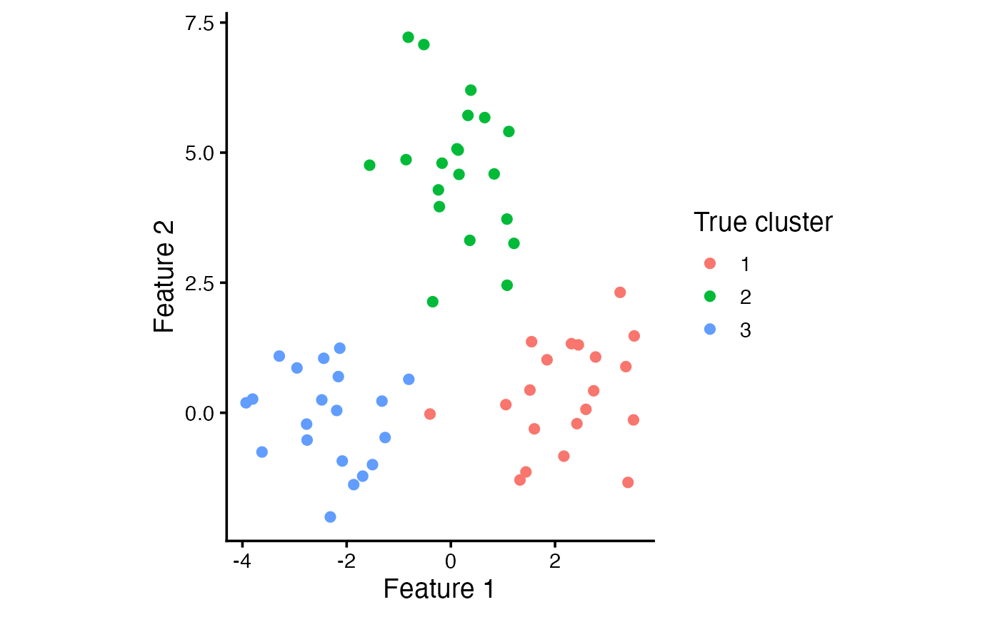
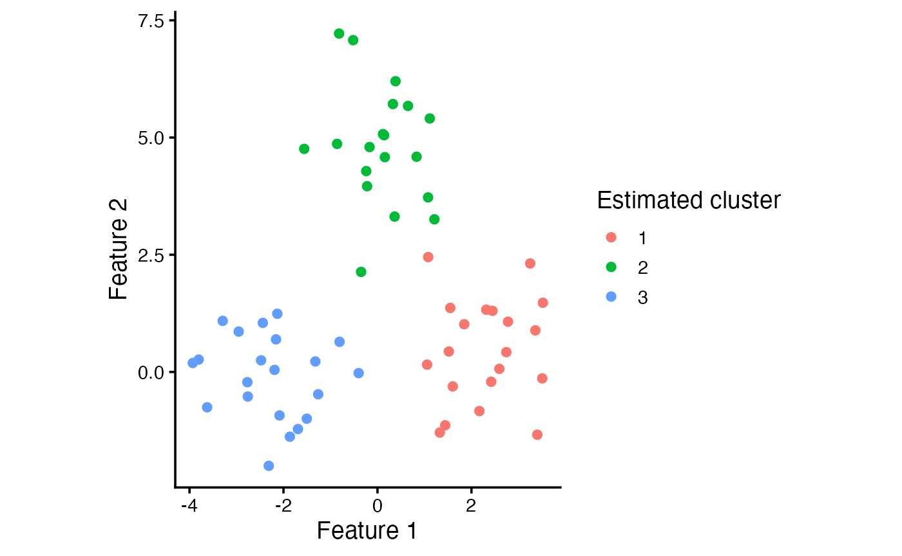
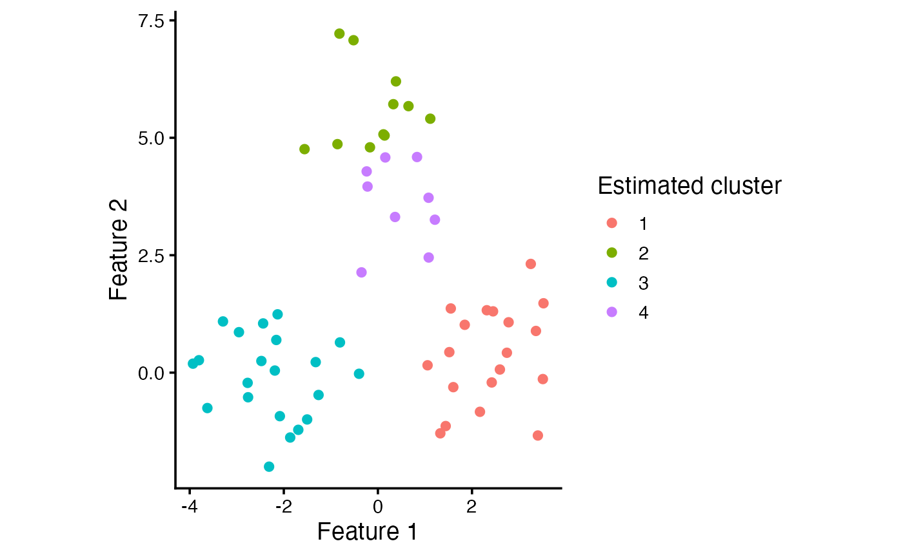

Tutorials.RmdThis tutorial demonstrates the basic workflow for
KmeansInference, including the more-powerful union
selective test implemented in kmeans_inference_union().
We generate observations in dimensions from three Gaussian clusters with common noise standard deviation . The three means form an equilateral triangle, so clusters 1 and 3 have different population means.
set.seed(2022)
n_per <- 20
n <- 3 * n_per
q <- 2
delta <- 5
sig <- 1
true_clusters <- rep(1:3, each = n_per)
mu <- rbind(
c(delta / 2, 0),
c(0, sqrt(3) * delta / 2),
c(-delta / 2, 0)
)
X <- matrix(rnorm(n * q, sd = sig), n, q) + mu[true_clusters, ]
plot_df <- data.frame(
X1 = X[, 1],
X2 = X[, 2],
true_cluster = factor(true_clusters)
)
ggplot(plot_df, aes(X1, X2, colour = true_cluster)) +
geom_point(size = 2) +
coord_equal() +
labs(x = "Feature 1", y = "Feature 2", colour = "True cluster") +
theme_classic(base_size = 14)
The package uses kmeans_estimation() rather than
stats::kmeans() because the selective test needs the full
Lloyd path, not only the final clustering. The final cluster labels are
the labels used by the inference functions.
k <- 3
kmeans_fit <- kmeans_estimation(X, k, iter.max = 20, seed = 2021, verbose = FALSE)
estimated_clusters <- kmeans_fit$final_cluster
table(true_clusters, estimated_clusters)
#> estimated_clusters
#> true_clusters 1 2 3
#> 1 19 0 1
#> 2 1 19 0
#> 3 0 0 20
plot_df$estimated_cluster <- factor(estimated_clusters)
ggplot(plot_df, aes(X1, X2, colour = estimated_cluster)) +
geom_point(size = 2) +
coord_equal() +
labs(x = "Feature 1", y = "Feature 2", colour = "Estimated cluster") +
theme_classic(base_size = 14)
The original selective test conditions on the entire observed Lloyd path. Here we test the difference in means between estimated clusters 1 and 3.
cluster_1 <- 1
cluster_2 <- 3
path_result <- kmeans_inference(
X, k = k, cluster_1 = cluster_1, cluster_2 = cluster_2,
sig = sig, iter.max = 20, seed = 2021, verbose = FALSE
)
summary(path_result)
#> cluster_1 cluster_2 test_stat p_selective p_naive
#> 1 1 3 4.603701 5.884539e-05 7.164386e-48The summary reports the norm of the observed difference in cluster
means (test_stat), the original selective p-value
(p_selective), and the naive Wald p-value
(p_naive) that ignores the fact that the clusters were
selected from the same data.
The union test weakens the conditioning event: it preserves the two
tested observed clusters along the perturbation path, but does not
require every intermediate Lloyd assignment to match the observed path.
The returned p_path reproduces the original selective
p-value, while p_union is the more-powerful selective
p-value.
union_result <- kmeans_inference_union(
X, k = k, cluster_1 = cluster_1, cluster_2 = cluster_2,
sig = sig, iter.max = 20, seed = 2021, verbose = FALSE
)
summary(union_result)
#> cluster_1 cluster_2 test_stat p_union p_path p_naive
#> 1 1 3 4.603701 4.917318e-08 5.884539e-05 7.164386e-48
#> exhaustive
#> 1 TRUEIn this realization, both selective tests reject the null hypothesis,
and the union p-value is smaller because it conditions on less
information. The exhaustive column indicates whether all
adjacent Lloyd regions were explored up to the tail cutoff controlled by
scan_tail_prob.
Selective inference is most important when k-means splits one population group into multiple estimated clusters. We rerun k-means with ; in this realization, estimated clusters 2 and 4 are both mostly drawn from the same true cluster.
k_null <- 4
kmeans_fit_null <- kmeans_estimation(
X, k_null, iter.max = 20, seed = 2021, verbose = FALSE
)
estimated_clusters_null <- kmeans_fit_null$final_cluster
table(true_clusters, estimated_clusters_null)
#> estimated_clusters_null
#> true_clusters 1 2 3 4
#> 1 19 0 1 0
#> 2 0 11 0 9
#> 3 0 0 20 0
plot_df$estimated_cluster_k4 <- factor(estimated_clusters_null)
ggplot(plot_df, aes(X1, X2, colour = estimated_cluster_k4)) +
geom_point(size = 2) +
coord_equal() +
labs(x = "Feature 1", y = "Feature 2", colour = "Estimated cluster") +
theme_classic(base_size = 14)
Testing these two split clusters illustrates the danger of ignoring selection: the naive p-value is tiny, whereas the union selective p-value is moderate.
null_result <- kmeans_inference_union(
X, k = k_null, cluster_1 = 2, cluster_2 = 4,
sig = sig, iter.max = 20, seed = 2021, verbose = FALSE
)
summary(null_result)
#> cluster_1 cluster_2 test_stat p_union p_path p_naive exhaustive
#> 1 2 4 2.103857 0.3364248 0.03203236 1.747248e-05 TRUEIf sig is omitted, KmeansInference uses the
robust median-based estimate from Chen and Witten (2022+). For a general
covariance model, set iso = FALSE and pass
SigInv, the inverse covariance matrix.